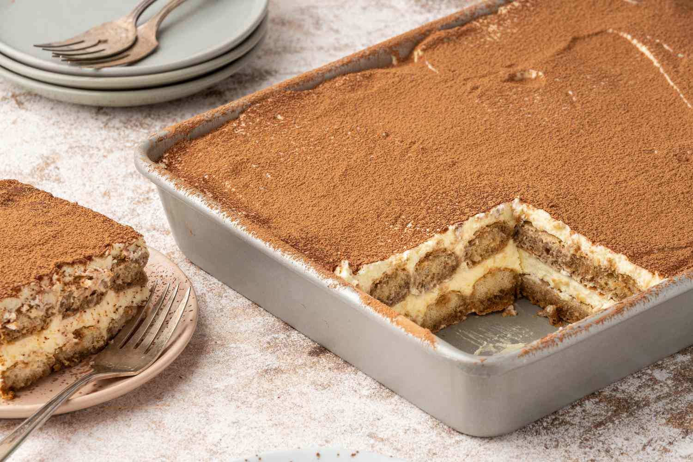

<!DOCTYPE html>
<html lang="en">
</html>
<head> <meta charset="UTF-8"> 
    <title style="text-align: center;">Recipes</title>
</head>


<body>
    <h1 style="text-align: center;">Tiramisu</h1> 

        

    <h3 style="text-align: center;">This delicious and unbelievably easy Tiramisu recipe is made with coffee soaked lady fingers, sweet and creamy mascarpone (no raw eggs!), and cocoa powder dusted on top. It requires no baking and can be made in advance!</h2>

        <p style="text-align: center;">This recipe has been a long time coming, and I’m embarrassed to admit how much tiramisu has been made in the trial of this recipe (I literally bought out every package of Savoiardi lady fingers at two different stores!) but I wanted to nail down the right approach. By “right approach”, I mean how traditional of a tiramisu recipe I wanted to share. (In case you’re not familiar with it, Tiramisu is a popular Italian dessert made with lady fingers (or spongecake), coffee, liqueur, and mascarpone cheese topped with chocolate powder). Should I make the lady fingers from scratch? Does it matter? And more importantly, do I make it with raw eggs?</p>

    <h2 style="text-align: center;">Ingredients</h3>
    <ul>
        <li>1 1/2 cups heavy whipping cream </li>
        <li>8 ounce container mascarpone cheese ,room temperature</li>
        <li>1/3 cup granulated sugar</li>
        <li>1 teaspoon vanilla extract</li>
        <li>1 1/2 cups cold espresso</li>
        <li>3 Tablespoons coffee flavored liqueur ,optional (Kahlua or DaVinci brands)</li>
        <li>1 package Lady Fingers ,Savoiardi brand can be found in the cookie aisle at your local grocery store, or online</li>
        <li>Cocoa powder for dusting the top</li>
    </ul>

    <ol>
        <li>Add whipping cream to a mixing bowl and beat on medium speed with electric mixers (or use a stand mixer). Slowly add sugar and vanilla and continue to beat until stiff peaks. Add mascarpone cheese and fold in until combined. Set aside.</li>
        <li>Add coffee and liqueur to a shallow bowl. Dip the lady fingers in the coffee (Don't soak them--just quickly dip them on both sides to get them wet) and lay them in a single layer on the bottom of an 8x8'' or similar size pan. </li>
        <li>Smooth half of the mascarpone mixture over the top. Add another layer of dipped lady fingers. Smooth remaining mascarpone cream over the top.</li>
        <li>Dust cocoa powder generously over the top (I use a fine mesh strainer to do this). Refrigerate for at least 3-4 hours or up to overnight before serving.</li>
    </ol>

    </body>